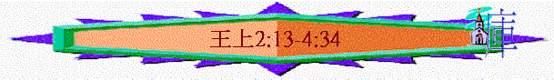

|
屬神國度的衰落 |
|||
|
二王—行神的旨意得堅固 |
二國—不專心順服終分裂 |
二先知—神能力彰顯仍剛硬 |
二結局—繼續行惡至終亡國 |
|
王上1-10 |
王上11-16 |
王上17-王下9:4 |
王下9:5-25:30 |
一.二王(王上1-10)
1.大衛王----神的旨意必成就(1:1-2:12)
2.所羅門----行神旨意得堅固(2:13-10:29)
∼大衛的兒子所羅門登位，他謹守父親的話，行主的心意：行公義、求智慧、建聖殿
∼當他每一次行主的心意時，神就堅固他的國位，令他的國更興旺
A.行公義(2:13-46)
∼作為神所設立的王及領袖，須要有公義
a.除亞多尼雅
「所羅門說：「他若作忠義的人，連一根頭髮也不至落在地上；他若行惡，必要死亡。」」1:52
∼若亞多尼雅忠義，所羅門是不殺他的，但今次他實在行惡，所羅門要滅他的命
(1)亞多尼雅的惡行
(A)不忿
「哈及的兒子亞多尼雅去見所羅門的母親拔示巴，拔示巴問他說：「你來是為平安嗎？」回答說：「是為平安」；又說：「我有話對你說。」拔示巴說：「你說吧。」」2:13-14
∼他表面向拔示巴表示所羅門得國在乎耶和華，但從他表達「國原是歸我的」，顯示他仍有不忿，按理性上是知道神的安排，感受上仍不甘心國被奪去，反映他仍不甘心接受神的旨意
(B)狡猾
「現在我有一件事求你，望你不要推辭。」拔示巴說：「你說吧。」」2:16
∼為何不直按求問所羅門呢？他知道要步署他下一步計劃，要得人幫助
∼所以他想瞞騙所羅門的母親，用巧言希望她能幫助他的意慾
(C)逆倫
「他說：「求你請所羅門王將書念的女子亞比煞賜我為妻，因他必不推辭你。」」2:17
∼在古時的世代，王若駕崩，他的兒子可承接他的妃嬪，但在摩西的律法中，不能親近同父的異母，書念的女子亞比煞雖沒與大衛有親近，但仍是大衛的女子，亞多尼雅應不能對她有非份之想
(D)野心/不忠
「亞希多弗對押沙龍說：「你父所留下看守宮殿的妃嬪，你可以與他們親近。以色列眾人聽見你父親憎惡你，凡歸順你人的手就更堅強。」於是人為押沙龍在宮殿的平頂上支搭帳棚；押沙龍在以色列眾人眼前，與他父的妃嬪親近。」撒下16:21-22
∼古時國王死後由繼位者承受妃嬪(像押沙龍想奪去父親的妃嬪一樣)
∼亞多尼雅要他父親的女子，顯明他未放棄奪位之野心
(2)所羅門的回應
「所羅門王就指著耶和華起誓說：「亞多尼雅這話是自己送命，不然，願神重重的降罰與我。耶和華堅立我，使我坐在父親大衛的位上，照著所應許的話為我建立家室；現在我指著永生的耶和華起誓，亞多尼雅今日必被治死。」於是所羅門王差遣耶何耶大的兒子比拿雅，將亞多尼雅殺死。」王上2:23-25
∼之前所羅門已給機會亞多尼雅，不殺他，但他這表現顯出他不忠不義，所以他差遣耶何耶大的兒子比拿雅，將亞多尼雅殺死
b.罷免祭司亞比亞他
(1)亞比亞他的愚味
「王對祭司亞比亞他說：「你回亞拿突歸自己的田地去吧！你本是該死的，但因你在我父親大衛面前抬過主耶和華的約櫃，又與我父親同受一切苦難，所以我今日不將你殺死。」」2:26
(A)有祭司的身份
(B)有美好的表現
∼曾抬約櫃，也與大衛一同經歷苦難，有功也有勞
(C)有屬靈的知識
∼撒督祭司也知到神的心意是要所羅門為王，作為另一祭司的亞比亞他沒理由不知道的
(D)但至終的悖逆
∼他至終沒有順從大衛及神意思，反協助亞多尼雅作王
(2)所羅門的回應
「所羅門就革除亞比亞他，不許他作耶和華的祭司。這樣，便應驗耶和華在示羅論以利家所說的話。」2:27
(3)神旨意的應驗
「因此，耶和華以色列的神說：『我曾說，你和你父家必永遠行在我面前；現在我卻說，決不容你們這樣行。因為尊重我的，我必重看他；藐視我的，他必被輕視。」撒上2:30
∼昔日以利家行神眼中惡的事，神要他們的後代不能終身在神面前作祭司，而亞比亞他也是以利的後裔，所以也應驗了聖經的話
c.除約押
(1)約押的逃亡
「約押雖然沒有歸從押沙龍，卻歸從了亞多尼雅。他聽見這風聲，就逃到耶和華的帳幕，抓住祭壇的角。」2:28
「比拿雅來到耶和華的帳幕，對約押說：「王吩咐說，你出來吧！」他說：「我不出去，我要死在這裡。」比拿雅就去回覆王，說約押如此如此回答我。」2:30
∼約押知道亞多尼雅死後，他懼怕被殺逃至帳幕，抓住祭壇的角，望得免死亡
(2)約押的不義
(A)不理想的忠心
∼約押是一位出色的軍事將領，他也忠於大衛，沒有跟隨押沙龍叛變，但回顧他一生時，他的忠心也有自己的私心，當人威脅他的地位時，他會不理王的意思，而隨自己私心，剷除別人。
∼另外，他似乎跟隨自己理想的王多於跟隨神，當大衛年紀老邁，他轉移跟隨甚有機會作王的亞多尼雅，對大衛的心也到後來有改變
∼另外大衛在殺烏利亞事件，約押也有份參與，他似乎是跟隨王多於跟隨神的旨意，忠於王的心意，多於忠於神的意思
(B)不相配的生命
「那日，以色列眾民才知道殺尼珥的兒子押尼珥並非出於王意。王對臣僕說：「你們豈不知今日以色列人中死了一個作元帥的大丈夫嗎？我雖然受膏為王，今日還是軟弱；這洗魯雅的兩個兒子比我剛強。願耶和華照著惡人所行的惡報應他。」」撒下3:37-39
「你知道洗魯雅的兒子約押向我所行的，就是殺了以色列的兩個元帥：尼珥的兒子押尼珥和益帖的兒子亞瑪撒。他在太平之時流這二人的血，如在爭戰之時一樣，將這血染了腰間束的帶和腳上穿的鞋。」王上2:5
「王說：「你可以照著他的話行，殺死他，將他葬埋，好叫約押流無辜人血的罪不歸我和我的父家了。耶和華必使約押流人血的罪歸到他自己的頭上；因為他用刀殺了兩個比他又義又好的人，就是以色列元帥尼珥的兒子押尼珥和猶大元帥益帖的兒子亞瑪撒，我父親大衛卻不知道。」王上2:31-32
∼約押是以色列的軍隊的大元帥，他是領袖，但卻沒有美好的生命，一生充滿疑恨、妒忌、仇恨，他因著私心殺了押尼珥和亞瑪撒
∼大衛形容他是惡人，所羅門形容他比不上押尼珥與亞瑪撒的義與好！
(3)所羅門的回應
「若有人恨他的鄰舍，埋伏著起來擊殺他，以致於死，便逃到這些城的一座城，本城的長老就要打發人去，從那裡帶出他來，交在報血仇的手中，將他治死。你眼不可顧惜他，卻要從以色列中除掉流無辜血的罪，使你可以得福。」」申19:11-13
「王說：「你可以照著他的話行，殺死他，將他葬埋，好叫約押流無辜人血的罪不歸我和我的父家了。」王上2:31
「於是耶何耶大的兒子比拿雅上去，將約押殺死，葬在曠野約押自己的墳墓（原文作房屋）裡。王就立耶何耶大的兒子比拿雅作元帥，代替約押，又使祭司撒督代替亞比亞他。」王上2:34-35
∼按照律法的規定，若有人故意理伏殺人，即或逃至逃城，也要被處死
∼約押流無辜人的血，所羅門顯出他的公義及順服(父的心意)，即或約押逃至祭壇，他也派比拿雅將他殺死
d.除示每
(1)王的警戒
「王差遣人將示每召來，對他說：「你要在耶路撒冷建造房屋居住，不可出來往別處去。你當確實地知道，你何日出來過汲淪溪，何日必死！你的罪（原文作血）必歸到自己的頭上。」」王上2:36-37
∼示每是便雅憫人，他是掃羅族的人
∼大衛要所羅門殺示每，但所羅門給示每一個機會，若他仍住耶路撒冷則不會死亡，相反他若離開汲淪溪，必被處死(這也可免他在別處謀反作亂)
(2)示每的不義
(A)咒詛神所立的王
「大衛王到了巴戶琳，見有一個人出來，是掃羅族基拉的兒子，名叫示每。他一面走一面咒罵，又拿石頭砍大衛王和王的臣僕；眾民和勇士都在王的左右。示每咒罵說：「你這流人血的壞人哪，去吧去吧！你流掃羅全家的血，接續他作王；耶和華把這罪歸在你身上，將這國交給你兒子押沙龍。現在你自取其禍，因為你是流人血的人。」」撒下16:5-8
∼示每曾在大衛落難時，咒詛大衛，但聖經給我們的真理是凡在上掌權的應當要尊敬，更何況是神所立的王
(B)不遵守與王立之約
「過了三年，示每的兩個僕人逃到迦特王瑪迦的兒子亞吉那裡去。有人告訴示每說：「你的僕人在迦特。」示每起來，備上驢，往迦特到亞吉那裡去找他的僕人，就從迦特帶他僕人回來。」王上2:39-40
「現在你為何不遵守你指著耶和華起的誓和我所吩咐你的命令呢？」」王上2:43
∼所羅門王已給示每機會，命他不可離開耶路撒冷，但後來他因找自己的僕人已離開了，他不守與王立之約。
(3)所羅門的回應
「於是王吩咐耶何耶大的兒子比拿雅，他就去殺死示每。這樣，便堅定了所羅門的國位。」2:46
∼所羅門遵主的心意行公義，殺死示每，除約押，他的國位也被堅定
B.求智慧(3-4)
a.當時的背景
(1)與法老結親
「所羅門與埃及王法老結親，娶了法老的女兒為妻，接他進入大衛城，直等到造完了自己的宮和耶和華的殿，並耶路撒冷周圍的城牆。」3:1
∼所羅門與埃及王法老結親，可能是國際間建立邦交的方法
(2)邱壇仍在
「當那些日子，百姓仍在邱壇獻祭，因為還沒有為耶和華的名建殿。」3:2
「我們今日在這裡所行的是各人行自己眼中看為正的事，你們將來不可這樣行；因為你們還沒有到耶和華你神所賜你的安息地，所給你的產業。」申12:8-9
「你要謹慎，不可在你所看中的各處獻燔祭。惟獨耶和華從你那一支派中所選擇的地方，你就要在那裡獻燔祭，行我一切所吩咐你的。」申12:13-14
∼在舊約律例中，人不可在自己的地方私自建邱壇獻祭，要在神選擇的地方(耶路撒冷)，但當時聖殿仍未建立，所以可以容許在別處燒香獻祭
b.美好的榜樣
∼所羅門在此章聖經留下作王美好的榜樣給我們
(1)愛耶和華
「所羅門與埃及王法老結親，娶了法老的女兒為妻，接他進入大衛城，直等到造完了自己的宮和耶和華的殿，並耶路撒冷周圍的城牆。」3:1
∼愛神的人自然會遵守祂的話
(2)甘心奉獻
「所羅門王上基遍去獻祭；因為在那裡有極大（或作：出名）的邱壇，他在那壇上獻一千犧牲作燔祭。」3:4
∼律例上沒有規定所羅門要如此奉獻，但有一日，他自發到基遍(當時約櫃在耶路撒冷，會幕及銅壇卻在基遍)獻上一千犧牲作燔祭，全獻給神
(3)只求智慧
「在基遍，夜間夢中，耶和華向所羅門顯現，對他說：「你願我賜你什麼？你可以求。」」3:5
(A)掌握屬靈的原則
「所羅門說：「你僕人我父親大衛用誠實、公義、正直的心行在你面前，你就向他大施恩典，又為他存留大恩，賜他一個兒子坐在他的位上，正如今日一樣。」3:6
∼所羅門清楚若要得神的恩，作為王雖有如大衛的誠實、公義與正直的心，行在神前
∼同樣，所羅門作了王後，他如何在民面前有正直與公義，如何能分別是非，判斷百姓的事
(B)認識自己的不能
「耶和華我的神啊，如今你使僕人接續我父親大衛作王；但我是幼童，不知道應當怎樣出入。僕人住在你所揀選的民中，這民多得不可勝數。」3:7-8
∼所羅門認識自己年幼，未必及大衛有公義有智慧判斷這麼多的百姓
(C)祈求屬天的智慧
「所以求你賜我智慧，可以判斷你的民，能辨別是非。不然，誰能判斷這眾多的民呢？」3:9
∼所以他祈求神給他智慧判斷神的民，祂這樣的祈求得神喜悅
(a)不為自己求
「所羅門因為求這事，就蒙主喜悅。神對他說：「你既然求這事，不為自己求壽、求富，也不求滅絕你仇敵的性命，單求智慧可以聽訟，」3:10-11
∼若難得有一機會，只要所羅門祈求甚麼，神就應允，但所羅門沒有為自己求壽、求富，求消滅仇敵
(b)只為神的事而求
∼他所求的是神的事，為求好好管理神的百姓
c.至終的回應
(1)神的回應
「我就應允你所求的，賜你聰明智慧，甚至在你以前沒有像你的，在你以後也沒有像你的。你所沒有求的，我也賜給你，就是富足、尊榮，使你在世的日子，列王中沒有一個能比你的。你若效法你父親大衛，遵行我的道，謹守我的律例、誡命，我必使你長壽。」」3:12-14
(A)無人能比的智慧
(B)無王能比的富足
(C)無王能比的尊榮
(D)有條件下的長壽(要遵行神的道)
(2)人的回應----獻祭
「所羅門醒了，不料是個夢。他就回到耶路撒冷，站在耶和華的約櫃前，獻燔祭和平安祭，又為他眾臣僕設擺筵席。」3:15
(A)額外的獻祭
∼他返回有約櫃的耶路撒冷，額外再獻燔祭
(B)感恩的獻上
∼也獻平安祭，可能代表一種感恩
d.智慧的運用
(1)難審的案件
「一日，有兩個妓女來，站在王面前。一個說：「我主啊，我和這婦人同住一房；他在房中的時候，我生了一個男孩。我生孩子後第三日，這婦人也生了孩子。我們是同住的，除了我們二人之外，房中再沒有別人。夜間，這婦人睡著的時候，壓死了他的孩子。他半夜起來，趁我睡著，從我旁邊把我的孩子抱去，放在他懷裡，將他的死孩子放在我懷裡。天要亮的時候，我起來要給我的孩子吃奶，不料，孩子死了；及至天亮，我細細地察看，不是我所生的孩子。」那婦人說：「不然，活孩子是我的，死孩子是你的。」這婦人說：「不然，死孩子是你的，活孩子是我的。」他們在王面前如此爭論。」3:16-22
∼兩個妓女的案件，一個說醒來失去了兒子，被另一個拿去，用自己壓死了的兒子替換，但另一個則否認
∼而此件案難處理的地方是：
(A)沒有第三者
(B)各說自己對
(2)智慧的判斷
「王說：「這婦人說『活孩子是我的，死孩子是你的』，那婦人說『不然，死孩子是你的，活孩子是我的』」，就吩咐說：「拿刀來！」人就拿刀來。王說：「將活孩子劈成兩半，一半給那婦人，一半給這婦人。」活孩子的母親為自己的孩子心裡急痛，就說：「求我主將活孩子給那婦人吧，萬不可殺他！」那婦人說：「這孩子也不歸我，也不歸你，把他劈了吧！」王說：「將活孩子給這婦人，萬不可殺他；這婦人實在是他的母親。」」3:23-27
(A)不糾纏在爭辯中
∼若繼續爭論，各說各理，至終沒有結果的
(B)用人性角度作處理
∼用非人性的方法建議，將兩孩子劈成一半，而看出人性真正的一面，看出那個是真正愛孩子的母親，那一個不是
e.真神的賜福
(1)賜他尊榮
(A)有臣子
「所羅門作以色列眾人的王。他的臣子記在下面：撒督的兒子亞撒利雅作祭司，」4:1-2
(B)有官吏
「所羅門在以色列全地立了十二個官吏，使他們供給王和王家的食物，每年各人供給一月。」4:7
(C)有屬國
「所羅門統管諸國，從大河到非利士地，直到埃及的邊界。所羅門在世的日子，這些國都進貢服事他。」4:21
(2)賜他富強
(A)百姓眾多
「猶大人和以色列人如同海邊的沙那樣多，都吃喝快樂。」4:20
(B)食物豐裕
「所羅門每日所用的食物：細麵三十歌珥，粗麵六十歌珥，肥牛十隻，草場的牛二十隻，羊一百隻，還有鹿、羚羊、麅子，並肥禽。」4:22-23
「那十二個官吏各按各月供給所羅門王，並一切與他同席之人的食物，一無所缺。眾人各按各分，將養馬與快馬的大麥和乾草送到官吏那裡。」4:27-28
(C)軍力多強
「所羅門有套車的馬四萬，還有馬兵一萬二千。」4:26
∼「套車的馬」指拉戰車的馬
(3)賜他智慧
(A)極大的智慧
「神賜給所羅門極大的智慧聰明和廣大的心，如同海沙不可測量。」4:29
∼廣大的心應指他的心何等廣大，能知很多事情
(B)超越的智慧
「所羅門的智慧超過東方人和埃及人的一切智慧。他的智慧勝過萬人，勝過以斯拉人以探，並瑪曷的兒子希幔、甲各、達大的智慧。他的名聲傳揚在四圍的列國。」4:30-31
(C)廣博的智慧
「他作箴言三千句，詩歌一千零五首。他講論草木，自利巴嫩的香柏樹直到牆上長的牛膝草，又講論飛禽走獸、昆蟲水族。」4:32-33
(D)聞名的智慧
「天下列王聽見所羅門的智慧，就都差人來聽他的智慧話。」4:34